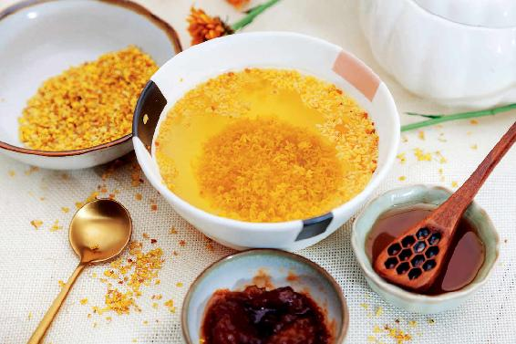

深秋已到，可能每个地方降温的时间有先后，但都是在一夜之间，气温就会降下来，有的地方可能白天还在穿短袖，到了夜里就需要盖厚被子了。
深秋的秋风伤人，一般会伤在人的头部和上半身。
现在是寒露节气，为什么有个“寒”字呢？我们看一年二十四个节气，有三个带有寒字，除了寒露，还有冬天最后一个月的小寒和大寒节气，而寒露节气是在秋天的最后一个月。
深冬之寒和深秋之寒有什么区别呢？
冬天最后一个月的小寒和大寒，是寒在人的下半身，寒从脚下起，那个时候要防的是下半身的寒；而寒露的寒是从秋风而来，主要伤在人的头部和上半身，深秋我们要防的是上半身的寒。
我曾经说过，“春捂秋冻”是有讲究的。“秋冻”，冻的是下而不是上。因此，无论气温高低，到了秋天早晚出门的时候，最好是多穿一件外套，防止秋风伤到上半身。
深秋之时，当人体受了寒以后，并不一定马上表现出风寒感冒的症状。因为人们经过一个春天和一个夏天阳气的滋养，正常人应该是阳气很足的，所以秋风一吹只是有点冷，一般来说不容易感冒，当然身体比较弱的人例外。
当秋风伤到人体之后，不同体质的人会有不同的表现。那么，我们如何来应对呢？
1.风寒感冒、脾胃性感冒
如果被秋风一吹，您就流清鼻涕了，咳嗽了，甚至感冒了，这说明您在夏天没有把身体养好，导致阳气不足，抵抗力差了。
还有一种人呢，被秋风一吹，不仅感冒，而且还上吐下泻，感觉恶心，这也是因为在夏天没有把身体养好，被湿气所伤了。这种湿气很可能是由于在夏天吃了过多寒湿之物造成的。
如果您是风寒感冒，可以用葱姜陈皮水这个方子；如果症状很轻微，那您用一点姜汤就可以了。
如果您出现了上吐下泻这种脾胃性的感冒，可以用香菜、生姜、葱一起熬的水来调理，或者服用藿香正气水。
2.总拉肚子
如果您没有明显的感冒症状，就只是拉肚子，那可以喝姜枣茶或者姜丝绿茶。记住煮姜丝绿茶的时候，姜要带皮，而绿茶要泡得浓一点，这样才能起到消炎杀菌的作用。
而如果表现出明显感冒症状的朋友，姜就不要带皮了，因为姜皮是止汗的，会影响姜的发散功能。
以上两种情况其实不是我们在深秋时受寒所应该出现的正常现象，这都说明您的身体在春天和夏天没有养好，抵抗力特别差。
在深秋时节，正常人受寒应该产生什么现象呢？会产生上火的现象。
当秋风吹袭人体，人体在春、夏所积累的阳气可以与它对抗，这时候身体内的一点虚火就会往上跑，有的朋友会觉得口干舌燥、嗓子发痒，甚至咽喉肿痛、牙痛、牙龈肿痛、头痛。此外，这些各种各样的痛，还伴随着一种很燥的感觉，比如，皮肤觉得很干，嗓子觉得很干，嘴里觉得很干。有人会觉得自己上火了，用一些清热的药去火，这就用错药了。
因为这种火其实是虚火，如果虚火很明显，比如，受凉之后造成了牙痛，可以用胡椒粉来引火归原。如果这种虚火不明显，它仅仅是造成一种很干很燥的感觉，微微的嗓子有一点痒，有一点痛，这时候就可以用到桂花了。
桂花对于我们预防深秋之寒（凉燥）是很有帮助的，最好不要等到秋风伤人了再用，而是在深秋这一个月，每天都用一点桂花来预防，因为秋风是突然而起的，我们很难知道什么时候降温，所以很容易中招。
1.桂花的温热可以散掉人身上的寒气
桂花茶是润肺养肺的，而且是温养，一般来说，花都是比较寒凉的，但桂花和玫瑰花却是偏温的，这种温还不会让人上火，反而能清掉肺里的虚火。因此，身上燥热、嗓子干痒或微微的痛都可以用到桂花。
桂花还可以帮助我们散掉身上的寒气，比如受寒之后，有时候鼻子不通，这时候您哪怕是闻一下桂花的香气，都会让您的鼻子通畅。

2.桂花既可以疏肝理气，又可以通瘀
桂花对于女性来说是特别有帮助的，因为它能疏肝通瘀，既可以疏散郁结的肝气，又可以疏通瘀滞。经常喝一点桂花茶，能预防女性面部出现色斑。
有些女性由于肝气不疏引起了月经量少、闭经，经常喝一点桂花茶也是有帮助的。因为桂花茶通的效果很明显，所以女性在经期不要随意饮用，如果痛经或者月经不通畅，可以喝一点来通一通，正常情况下，经期不要喝桂花茶。
我们要记住，虽然寒露时节并没有冬天那么冷，但是它的这种寒反而会被我们忽视，更容易让我们中招。因此，要防止深秋寒意伤人，就多喝一点桂子暖香茶吧。
读者评论：喝桂花茶，睡眠好了很多
幸福：喝桂花茶，最大的反应就是睡眠好了很多，谢谢陈老师。
允斌解惑：哺乳期可以喝桂花茶
香水柠檬：哺乳期可以喝桂花茶吗？
允斌：可以喝，但要注意桂花一定不能是熏过硫的。